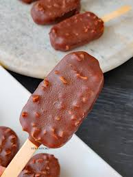

click

Recipe Book > Indian snacks
Gadbad Ice Cream

Ingredients:
- 1 cup vanilla ice cream
- 1 cup mango ice cream
- 1 cup strawberry ice cream
- 1/2 cup chopped nuts (any available nuts like cashew and almonds)
- 1/2 cup chopped fruits (any available fruits like apple and pineapple)
- 1/4 cup chocolate syrup
- 1/4 cup fruit syrup (mango, strawberry)
- Fresh fruits for garnish (optional)
Instructions:
- Start by scooping a few scoops of vanilla ice cream into a bowl or serving glass.
- Add a few scoops of mango ice cream on top of the vanilla ice cream.
- Next, add scoops of strawberry ice cream on top of the mango ice cream.
- Drizzle chocolate syrup and fruit syrups over the ice cream scoops.
- Sprinkle chopped nuts on top for a crunchy texture.
- Garnish with fresh fruits if desired.
- Serve immediately and enjoy your Gadbad Ice Cream!
Nut Full chacobar Ice Cream

Ingredients:
- 200g dark chocolate, chopped
- 100g mixed nuts (e.g., almonds, hazelnuts, walnuts), roughly chopped
- 150ml heavy cream
- 2 tbsp honey
- 1 tsp vanilla extract
- A pinch of salt
Instructions:
- In a heatproof bowl, melt the dark chocolate over a pot of simmering water (double boiler method). Stir occasionally until smooth.
- In a separate saucepan, heat the heavy cream until it begins to simmer. Remove from heat and stir in the honey and vanilla extract.
- Pour the hot cream mixture into the melted chocolate and whisk until fully combined and smooth.
- Add a pinch of salt to the chocolate mixture and stir in the chopped nuts.
- Pour the mixture into serving glasses or bowls and let it cool to room temperature. Refrigerate for at least 2 hours or until set.
- Serve chilled and enjoy your nut-filled chocolate cream!